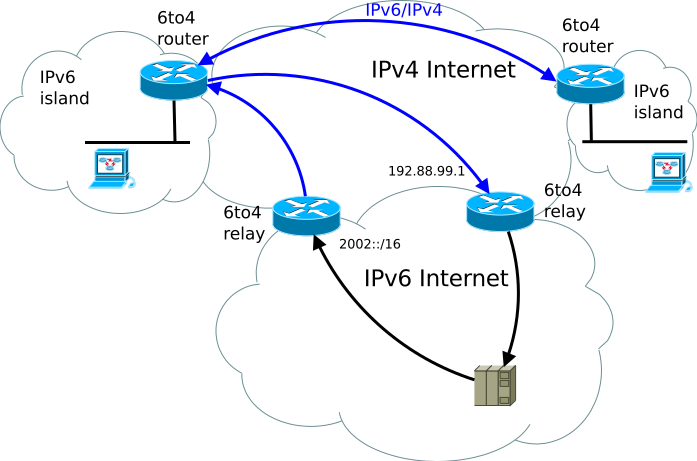

6to4¶
By Mro - Own work, CC BY-SA 3.0.
Permite transmitir paquetes IPv6 por una red IPv4 gracias a un router de borde.
Es un mecanismo de transición para la migración de IPv4 a IPv6.
No facilita la comunicación de hosts IPv4 con hosts IPv6, es para conectar hosts IPv6 con IPv6 a través de IPv4.
Las direcciones comienzan con
2002::/16.Para permitir tráfico hacia redes IPv6 nativas (
2001::/16) se establecieron los Relay Routers.Un router con 6to4 (de borde) toma como decisión:
Si quiere llegar a una IPv6 dentro de la LAN sabe que está directamente conectada.
Si quiere llegar a una
2002::/16sabe que tiene que mandar el paquete por la red IPv4, el destino IPv4 se determina de la dirección IPv6.Si quiere llegar a alguna
2001::/16tiene que enviar a algún router IPv6 que tenga acceso a la IPv6 nativa (Relay Router).
Los paquetes IPv6 van dentro de los datos del paquete IPv4.
Los Relay routers tienen, del lado IPv6, redes IPv6 nativas (
2001::/16). En cambio los routers de borde tienen redes con prefijo2002::/16.Para que las IPv6 nativas envíen cosas a un IPv6 6to4, usan como gateway el Relay router más cercano, ya que éstos anuncian la ruta
2002::/16.
Direcciones¶
Hay un bloque de direcciones IPv6 para cada dirección IPv4:
2002:xxyy:wwzz::/48
En donde xxyy:wwzz es la dirección IPv4 en formato hexadecimal. Quedan 16
bits para hacer subredes.